1997 BS7H DX-Pedition Slide Show
1997 BS7H（ Scarborough Reef）DXペディション 写真集

Scarborough Reef Slide Show
写真をご覧になった後は、左上の（戻る）をクリックして下さい
| Index | Document |
|---|---|
 |
1997 BS7H(No.1) 夕焼けのスカボロー・リーフ。水平線の黒点は#2ロック |
 |
1997 BS7H(No.2) #1ロックで運用するBA4RCとBD4RX |
 |
1997 BS7H(No.3) #1ロックで運用するJA1RJU（後ろは1400WのSUZUKI製・発電機） |
 |
1997 BS7H(No.4) 船上で米国・日本のメンバー（左からN7NG、JA1BK、W6RGG、W6EU、JA1RJU） |
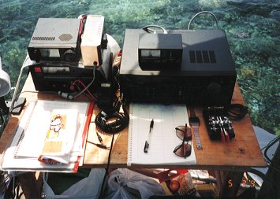 |
1997 BS7H(No.5) #1ロックの設備。FT-920（右）とIC-706（サテライト受信用） |
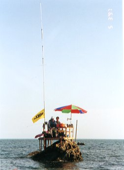 |
1997 BS7H(No.6) #2ロックの全景。ここは2人並んで座る余裕がある（OPはW6RGGとDA1DU） |
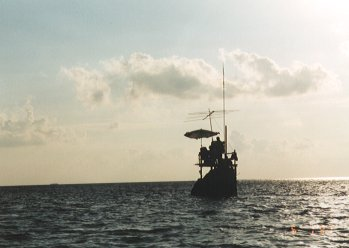 |
1997 BS7H(No.7) “朝焼け”の#1ロック。6mのアンテナは北東のJAを向いている（水平線は座礁船） |
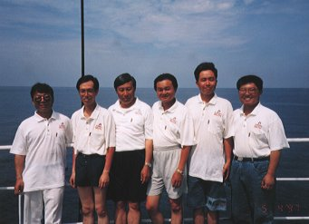 |
1997 BS7H(No.8) 中国から参加した6人のメンバー（左からBD4RX、BA1DU、BA1OK、BG7KW、BD7JG、BA1RC） |
 |
1997 BS7H(No.9) BG7KW（右）とJA1RJU |
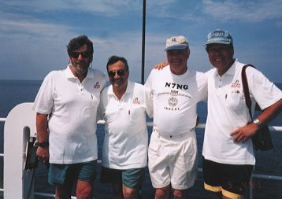 |
1997 BS7H(No.10) 米国から参加した3人のメンバー（左からW6EU、W6RGG、N7NG）とJA1RJU |
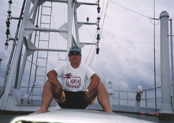 |
1997 BS7H(No.11) 中国海艦最上甲板でくつろぐJA1RJU（この船で4月27日から5月6日まで10日間過ごした） |
 |
1997 BS7H(No.12) #1ロックのアンテナ（6m 4エレ＝ダイヤモンド製HB9CV＝とHFのクッシュクラフト製・R5） |
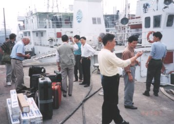 |
1997 BS7H(No.13) 広州港で出発の準備をするメンバー |
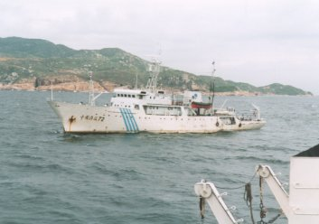 |
1997 BS7H(No.14) 10日間行動を共にした中国海艦72（900トン）。香港南方沖で停泊中 |
 |
1997 BS7H(No.15) スカボロー・リーフの朝。中央の黒い物体は座礁船（回りで漁をする漁船も見える） |
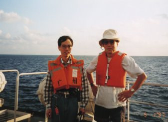 |
1997 BS7H(No.16) 救命胴衣と日焼け防止で正装？。 BA1DU（左）とJA1RJU |
 |
1997 BS7H(No.17) 船上で全メンバーが記念撮影 |
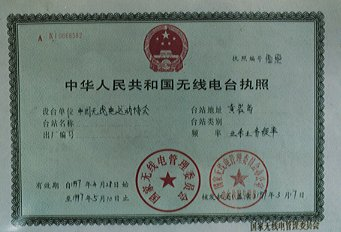 |
1997 BS7H(No.18) 1997年 BS7Hの免許状 |
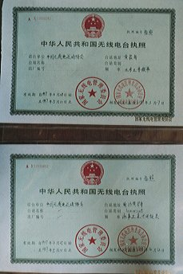 |
1997 BS7H(No.19) 1997年 BS7Hの免許状。下の一枚はサテライトの免許状 |
|
1997 BS7H(No.20) “朝焼け”のスカボロー・リーフ近海 |
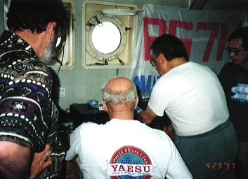 |
1997 BS7H(No.21) 中国海艦上からＭＭを運用する、米国のメンバー（左からW6EU、N7NG、W6RGG） |
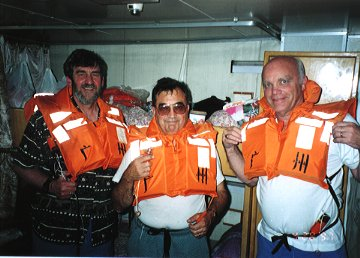 |
1997 BS7H(No.22) 船上の非難訓練に参加した米国のメンバー（左からW6EU、W6RGG、N7NG） |
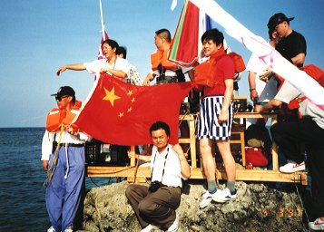 |
1997 BS7H(No.23) 最終日の朝、#2ロックで記念撮影する中国のメンバー |
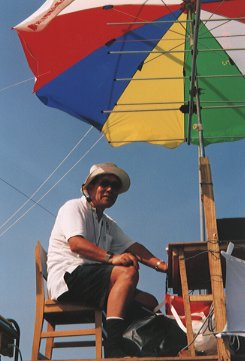 |
1997 BS7H(No.24) #1ロックで運用するJA1RJU（アンテナはサテライト用の145MHZ・7エレ） |
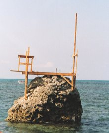 |
1997 BS7H(No.25) 運用終了、設備を撤去した#1ロックに別れを告げて（台風が来れば、土台は跡形もなく消滅する） |
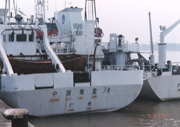 |
1997 BS7H(No.26) 出港を待つ、中国海艦74と72 |
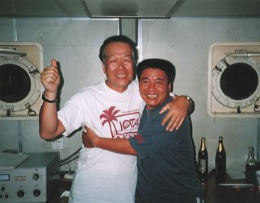 |
1997 BS7H(No.27) DX-Peditionの成功を祝して乾杯する、中国国家海洋局の李副局長とJA1RJU |
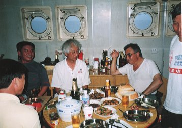 |
1997 BS7H(No.28) DX-Peditionの成功を祝して全員で乾杯。（李、JA1BK、W6RGG、BA1OK、背中は中国国家海洋局のChan氏） |
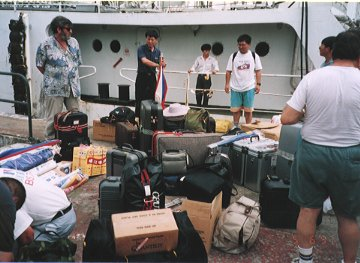 |
1997 BS7H(No.29) 広州へ無事帰港。陸揚げした荷物の山 |
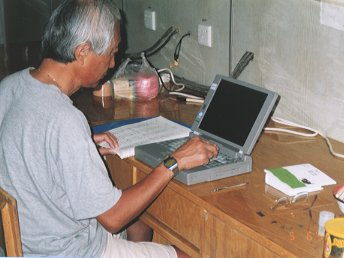 |
1997 BS7H(No.30) 船上でBS7Hのログをパソコンに入力するJA1BK |
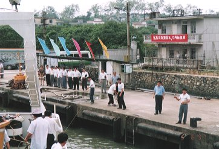 |
1997 BS7H(No.31) 鐘、太鼓の出迎えを受け広州へ帰港 |
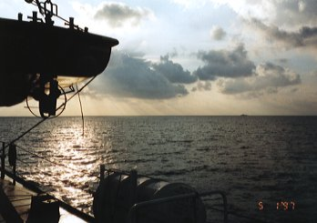 |
1997 BS7H(No.32) “朝焼け”の船上から見る、南シナ海 |
 |
1997 BS7H(No.33) “無線室”で団らんする米国・日本のメンバー |
 |
1997 BS7H(No.34) #1ロックを訪問してきたフィリピン海軍の将校（右） |
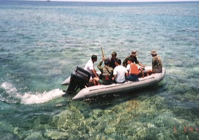 |
1997 BS7H(No.35) フィリピン海軍のゴムボート。一日に2、3度訪ねて来ることも |
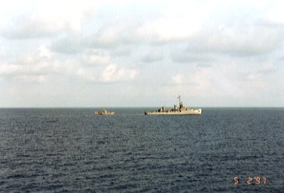 |
1997 BS7H(No.36) フィリピン海軍の戦艦3隻が、本船の囲りに集結 |
 |
1997 BS7H(No.37) 設営準備の目印のため#2ロックに“取り残された”N7NG・Wayne |
 |
1997 BS7H(No.38) 移動は荷物の山。スキーケースはアンテナの移動に便利 |


1997 BS7H index
 BS7H 1997 HOME PAGE
BS7H 1997 HOME PAGE